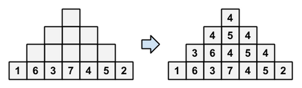

有一个 $N$ 层的金字塔，第 $i$ 层有 $2 i - 1$ 个方格，每个方格上有一个整数。
其中第 $N$ 层的数是一个 $1 \sim 2 N - 1$ 的排列。而对于第 $i$ ($1 \leq i \leq N - 1$) 层，其中第 $j$ 个数为第 $i + 1$ 层左起第 $j, j + 1, j + 2$ 个数的中位数 (即下方，左下方，右下方三个数的中位数)，如图所示：
现在给定第 $N$ 层的所有整数，请求出金字塔塔顶 (即第 $1$ 层) 上的整数。
第一行包含一个正整数 $N$ ($2 \leq N \leq 10^5$)，表示金字塔的层数。
第二行包含 $2 N - 1$ 个正整数 $a_1, a_2, \cdots, a_{2 N - 1}$ ($1 \leq a_i \leq 2 N - 1$)，表示金字塔第 $N$ 层上的整数，保证 $a_1, a_2, \cdots, a_{2 N - 1}$ 构成 $1, 2, \cdots, 2 N - 1$ 的一个排列。
输出一行一个整数，表示金字塔塔顶上的数。
注意到中位数是保序的，因此我们可以考虑二分答案，将所有数转化为只有 $0, 1$ 的情形 (即二值化)。
具体地，设二分的值为 $x$，我们令 $b_i = \left[ a_i \geq x \right]$，则如果最终通过 $b$ 序列构建出的塔顶为 $1$，说明真实答案 $\geq x$，否则说明真实答案 $< x$。
接下来我们考虑一个 $0/1$ 序列通过上面的操作过程中最后会得到多少。
首先，有一个简单的结论：若底下一列存在相同的两个方格，则在向上填的过程中，对应的两列仍然相同，且等于下面方格的值：
| $?$ | ||||||||
| $?$ | $?$ | $1$ | ||||||
| $0$ | $?$ | $?$ | $1$ | $1$ | ||||
| $0$ | $0$ | $?$ | $?$ | $1$ | $1$ | $?$ | ||
| $?$ | $0$ | $0$ | $?$ | $?$ | $1$ | $1$ | $?$ | $?$ |
证明较为容易，这里略去。
于是，对于一个 $0/1$ 金字塔，如果初始数组满足 $a_N = a_{N - 1}$ 或 $a_N = a_{N + 1}$，那么最后塔顶上的数就是 $a_N$。
那么接下来只需考虑 $a_{N - 1} = a_{N + 1} \neq a_N$ 的情形。
此时，我们再讨论 $a_{N - 1}, a_{N - 2}$ 以及 $a_{N + 1}, a_{N + 2}$，如果还是 $0, 1$ 交错的，那么继续……
直到找到最小的 $k \in \mathbb N^*$，使得 $a_{N - k}, a_{N - k + 1}, \cdots, a_{N +k - 1}, a_{N + k}$ 不是交错的。
考虑这时候金字塔的填数过程，结合下图表可以发现，这两个相同的数会在向上填的过程中，逐渐传递给中间的格子，使得最终塔顶就称为这两个相同的值。
| $\color {red} 1$ | ||||||||||
| $1$ | $\color {red} 1$ | $?$ | ||||||||
| $1$ | $1$ | $\color {red} 1$ | $?$ | $?$ | ||||||
| $1$ | $1$ | $\color {red} 1$ | $\color {red} 1$ | $x$ | $?$ | $?$ | ||||
| $?$ | $1$ | $\color {fuchsia} 1$ | $\color {fuchsia} 1$ | $0$ | $1$ | $x$ | $?$ | $?$ | ||
| $?$ | $?$ | $\color {blue} 1$ | $\color {blue} 1$ | $0$ | $1$ | $0$ | $1$ | $x$ | $?$ | $?$ |
其中 $x = 0$ 还是 $1$ 无关紧要 —— 只要有一侧就够了，两侧只是锦上添花 —— 因为简单奇偶分析知值肯定是一样的。
当然，最后一种情况是，这样的 $k$ 不存在。
这说明整个序列就是 $0, 1$ 交错的，从而容易分析得到塔顶就等于两侧的值。
| $0$ | ||||||||
| $0$ | $1$ | $0$ | ||||||
| $0$ | $1$ | $0$ | $1$ | $0$ | ||||
| $0$ | $1$ | $0$ | $1$ | $0$ | $1$ | $0$ | ||
| $0$ | $1$ | $0$ | $1$ | $0$ | $1$ | $0$ | $1$ | $0$ |
| $1$ | ||||||||
| $1$ | $0$ | $1$ | ||||||
| $1$ | $0$ | $1$ | $0$ | $1$ | ||||
| $1$ | $0$ | $1$ | $0$ | $1$ | $0$ | $1$ | ||
| $1$ | $0$ | $1$ | $0$ | $1$ | $0$ | $1$ | $0$ | $1$ |
于是，容易在 $O \left( N \right)$ 时间内完成 $0/1$ 金字塔的求值。
算上最外面的那层二分，总时间复杂度 $O \left( N \log N \right)$。
#include <bits/stdc++.h>
#define A(i) (a[i] >= x)
const int N = 200054;
int n;
int a[N];
inline bool check(int x) {
int l = n, r = n;
for (; l > 1; --l, ++r) {
if (A(l) == A(l - 1)) return A(l);
if (A(r) == A(r + 1)) return A(r);
}
return A(1);
}
int main() {
int i, L, R, M;
scanf("%d", &n);
for (i = 1; i < 2 * n; ++i) scanf("%d", a + i);
for (L = 1, R = 2 * n - 1; L < R; )
check(M = (L + R + 1) / 2) ? L = M : R = M - 1;
printf("%d\n", L);
return 0;
}
坑1：注意数组大小是 $2 N$，别开小了，以及下标访问的相关内容不要写错了 (0-indexed/1-indexed)。